The Applications Page
Table of Contents
Event List
Resource Metrics
The Applications page is the main interface for locating your applications and analyzing their performance. Unravel supports both ad-hoc applications, and repeatedly running workflows or data pipelines.
Ad-hoc applications are Hive queries, MapReduce jobs, Spark applications, Impala queries, and so on; these are generated by end user tools (such as BI tools like Tableau, Microstrategy, etc.) or submitted via CLI.
Repeatedly running workflows or data pipelines are created using
cronor schedulers like Oozie, AirFlow, or ETL tools like Informatica, Pentaho and others.
Unravel currently supports the the following application frameworks:
Cascading/Pig
Hive (on Map-Reduce)
Kafka
Impala
Map-Reduce
Tez
Hive (on Tez)
Spark
Native
Spark Streaming
SparkSQL
 Your application's performance and reliability depends on several factors such as quality of the code, types of joins used, configuration settings, data size, scheduler settings, contention with other applications, etc. It takes significant expertise and effort to get to the root cause(s) of an application's problems. Unravel's Intelligence Engine provides insights into your application's run to help resolve it's problems/inefficiencies. These insights are called events. For more information about events, see the Event Panel Examples.
Your application's performance and reliability depends on several factors such as quality of the code, types of joins used, configuration settings, data size, scheduler settings, contention with other applications, etc. It takes significant expertise and effort to get to the root cause(s) of an application's problems. Unravel's Intelligence Engine provides insights into your application's run to help resolve it's problems/inefficiencies. These insights are called events. For more information about events, see the Event Panel Examples.
The Applications Page has three tabs:
Applications,
Workflows, and
Sessions
| 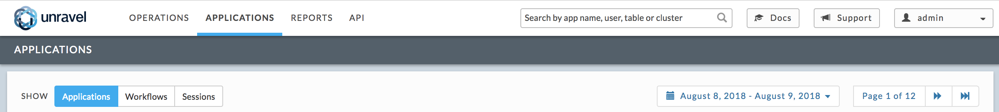 |
Note
Click here for common features used throughout Unravel's UI.
Applications Tab
By default this tab lists all applications for the past week. However, this view initially search results are ordered by the most recent start time. To reorder the results by another property, click the appropriate header in the results table.
Finding Applications
You can search for your application(s) in a variety of ways:
The left sidebar allows you to filter you App Name, App type, Status, Tags (if any), Queue, User, Cluster, Duration (Min and Max duration), and Number of Events.
By time period, including specifying custom range by dates and times, using the date picker or scroll by page (1).
If the job is part of a Hive query, Pig script, or a Workflow, a link to it is noted in the job's Go To column (2). Clicking on the application (3) takes you to the application's program manager (APM), i.e., MapReduce, Impala.
| 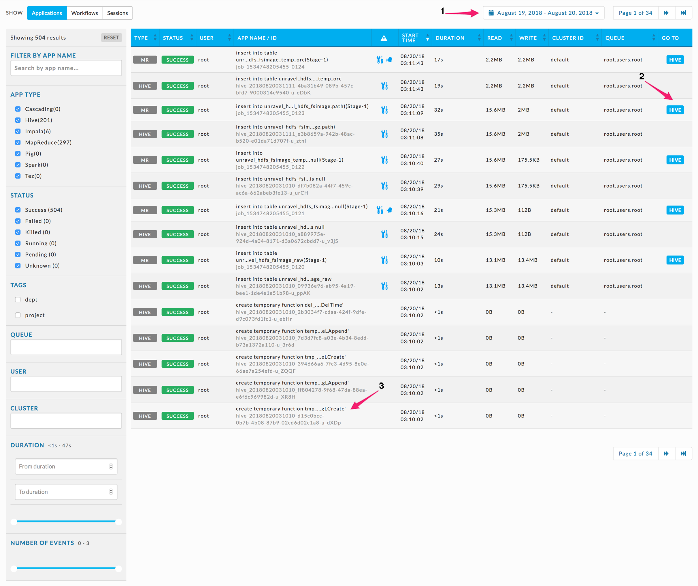 |
Workflow Tab
The layout of this window mirrors the Applications tab above. When there are no workflows tagged, the table is empty. You can use the date picker to select a date and time range. You can search for a workflow by name, enter the string in the search box; any user or workflow name matching or containing the string is displayed. Click on the workflow name to bring it up in the Workflow Manager Application Manager.
| 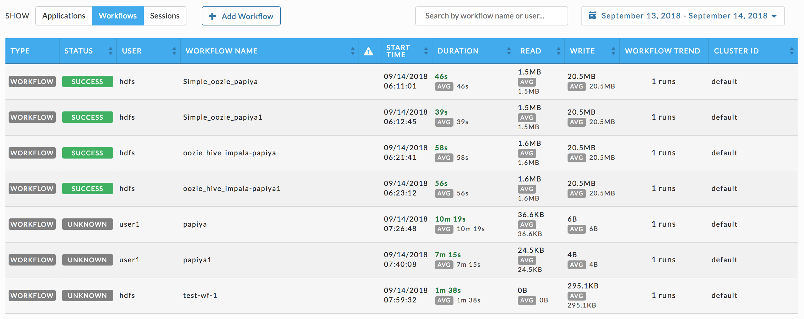 |
Click Add Workflow for a popup window listing all, if any, untagged workflows. The number of untagged workflows is noted in the title bar. Click on the radio button next to the workflow(s) you wish to add. Click Add Selected Workflows. Your changes are lost when closing the window before clicking Add Selected Workflows.
| 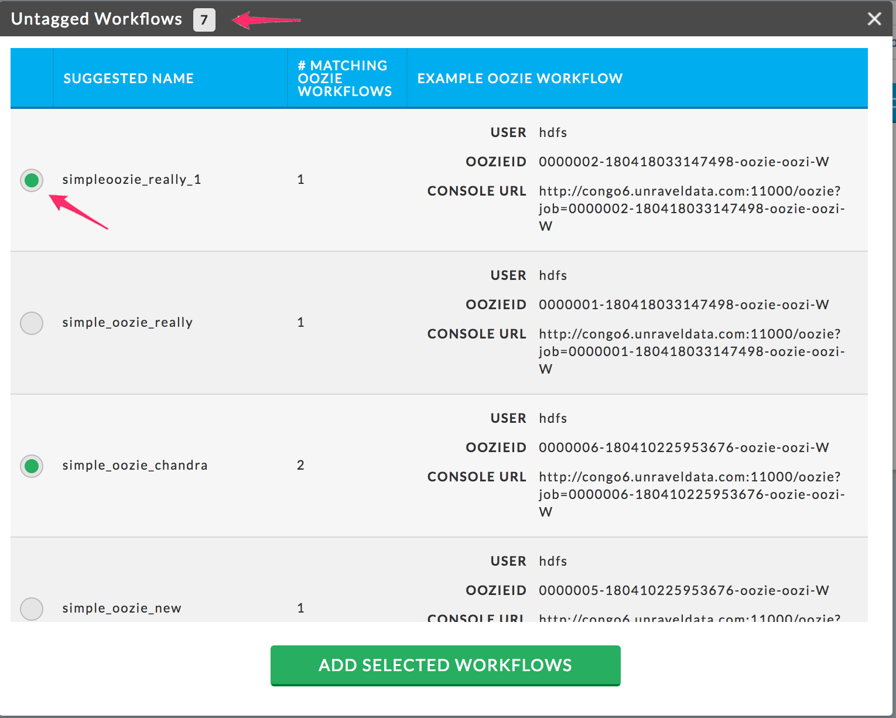 |
Sessions Tab
Note
This Report does not work with Postgres. You must be using MySQL and have the OnDemand package installed.
Sessions allows you to run your application expressly to tune its performance for:
efficiency: decrease the application's time (end-to end duration) and resources (shortening duration is first priority), or
reliability: in attempting to reduce resources Unravelprioritizes memory allocation to ensure the application doesn't fail due to "out of memory" exceptions.
Why use sessions when Unravel already offers insights and recommendations on an application's run?
You direct the tuning goal.
You can provide multiple runs of an application providing a larger data pool for Unravel to analyze.
You can have Unravel apply the recommendations for you and run the newly configured application.
You can see the effects, both positive and negative, the tuning has on an applications run.
You can compare runs configurations.
You can repeatedly tune the application until Unravel has no more recommendations.
Your session is saved and can be run again, e.g., new runs added, cluster configuration changed.
You can tune:
Spark
Hive on MapReduce
Sessions can serve simply as a tool to compare two runs of the same application.
The Sessions tabs opens displaying all current sessions sorted on Sessions Name in ascending order. The Start Time is the time of the latest application run. Number of Apps is the number of runs inside the Session. Some of these runs were added when the Session was created and some were created by Sessions when it applied it recommendations.
The four (4) KPI's Duration, IO, vCore Seconds, and Memory Seconds are essentially what the fine tuning hopes to minimize. The column contains a trend line which plots all the apps (vertices) contained in the Session. Beneath the trend line, the average and the best value is noted. For example, VCore9, has 3 apps , for Duration the average is 19m 24s and the best time was 38.31% better than this. You can not draw the conclusion that the same app performed best for each KPI. Last the Cluster ID is listed. You can sort the table on Session Name, Start Time and Cluster. Click on the edit button to edit the session.
You can search for a session by name. Enter the string in the search box; any session name matching or containing the string will be displayed.
| 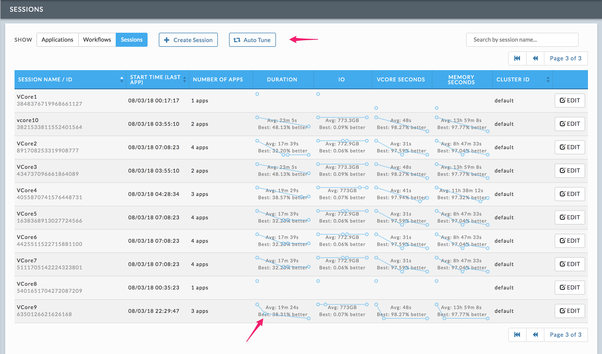 |
Creating a Session
You can use sessions
manually - where you actively control the analysis and application of recommendations, or
automatically - where sessions performs the iterations without you intervention until it reaches the maximum allowed runs or finds no more recommendations
Manual Session
Click Create Session. You must name your session, it does not have to be unique but we recommend you do so. Chose the Application Type and Tuning Goal from the pull-down menu and the tuning goal. Add the App IDs of the application(s) you want to tune you. Click +Add another App ID to add more apps. Click to delete an App ID. Click Add to create the session.
| 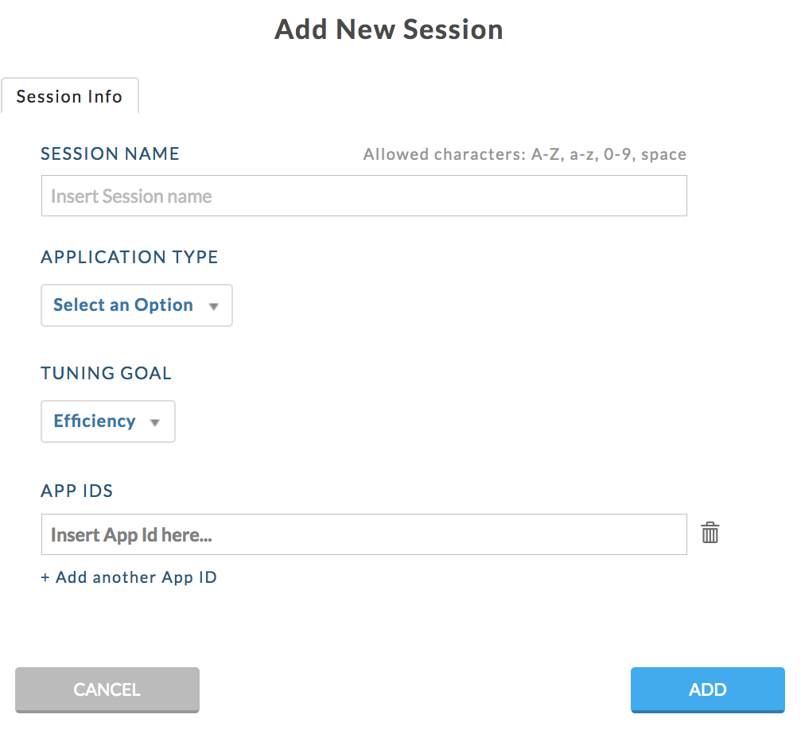 |
If you are tuning a Spark App you must supply the JAR path and Class Name.
| 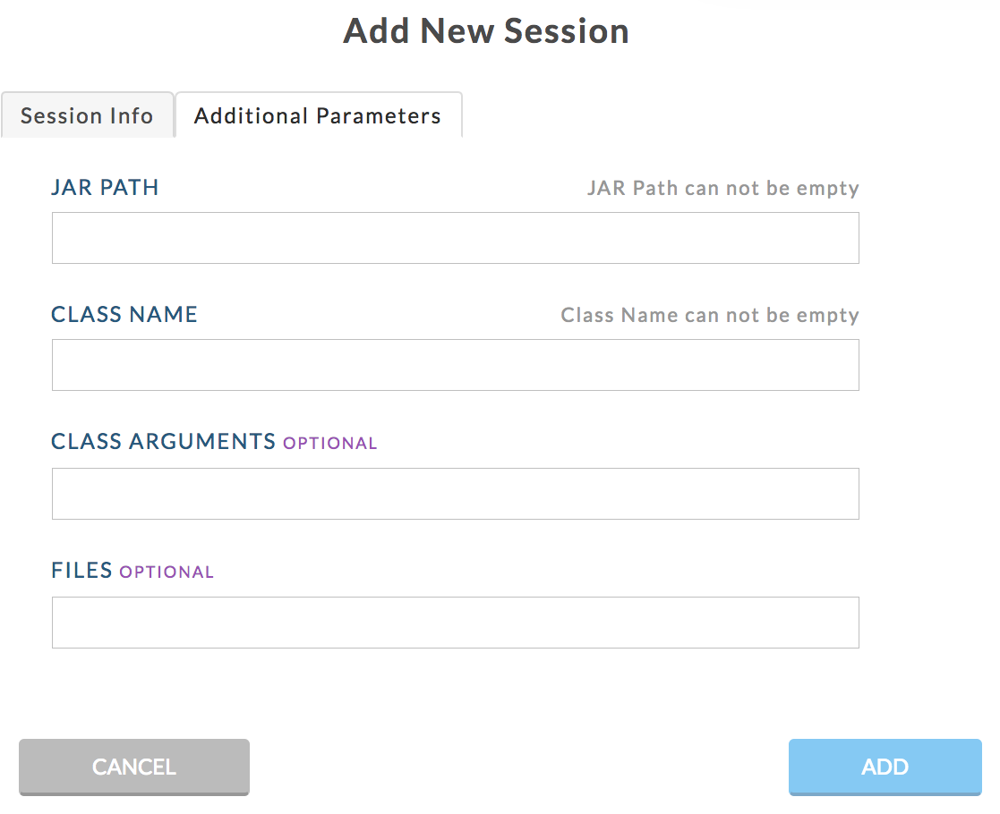 |
Auto Tune Session
You have the additional option to specify the maximum number of runs. If not specified, iterates continues until no recommendations are available. When specified, the iteration stops at the maximum number or lack of recommendations, whichever comes first.
| 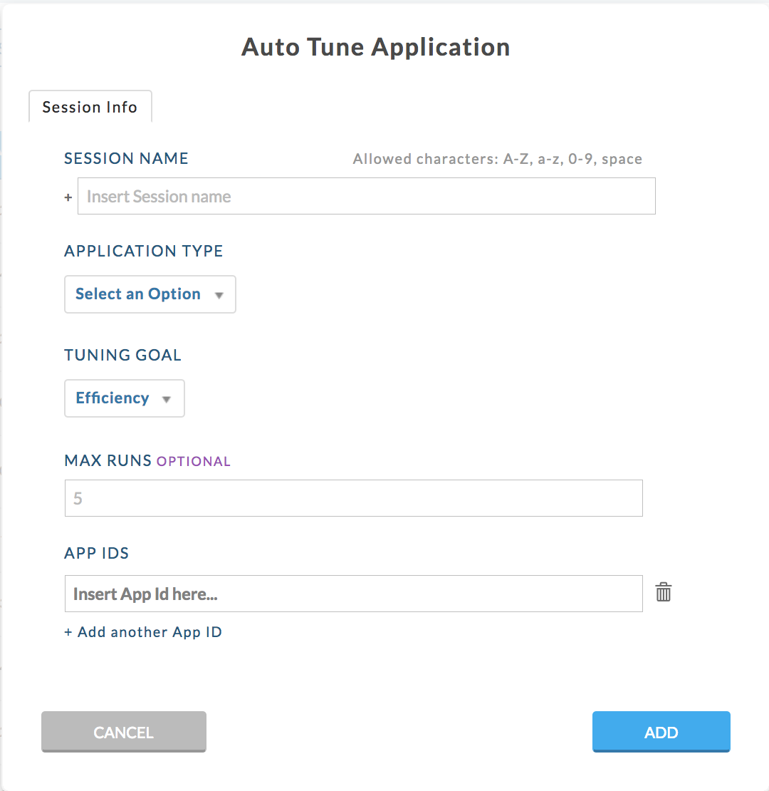 |
Via the Events Panel
If an applications has events with recommendations you can create a session directly from the recommendations tab. You can create either a manual or auto tune session. Click the type of session you wish to create and session popup is filled out except for the session name.
| 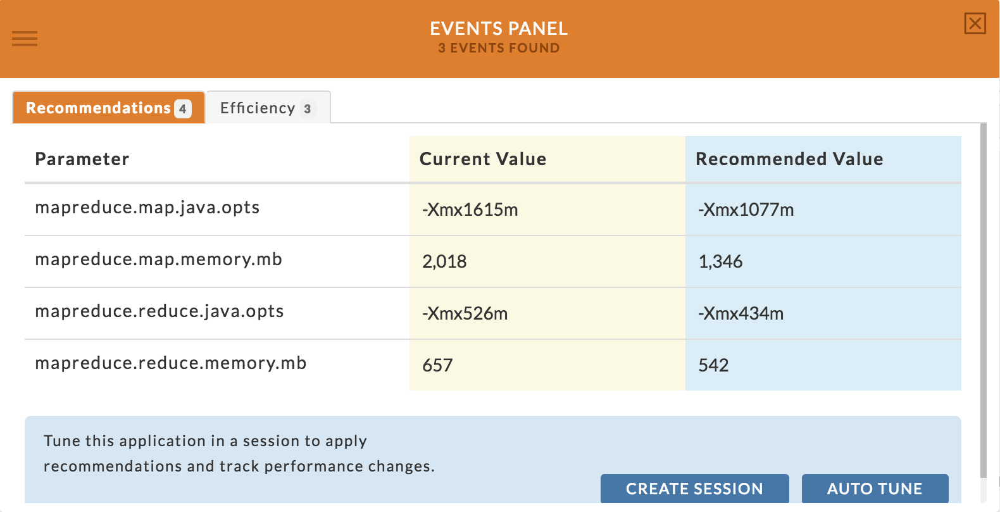 |
Session
The Sessions APM layout is similar to all APMs. Instead of KPIs reflecting the Application, Sessions KPI's are trends which graph the various runs resource usages measured when tuning, duration, IO, and resources. The example below is a session view immediately after creation.
| 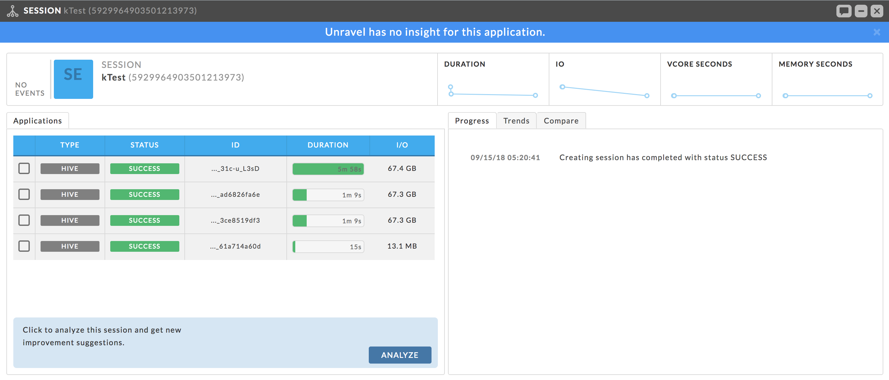 |
The left tab, Applications is the list of runs; initially it is whatever was loaded when the session was created. As analysis and application of recommendations occur more runs are added.
Right Tabs
Progress Tab - Keeps a log of all the activity. See example above.
Trends - Expanded graphs of Duration, IO, Resources
Compare - Allows you to compare two of the runs.
See Sessions Use Case for more information on using this feature.
Typical Application Manager's Layout
A black title bar notes the application type, i.e., Spark, Impala, MapReduce, Fragment, etc) and the job ID. On the right side of the title bar are glyphs for adding a comment, and to minimize or close the tile if possible. If the jobs has a parent, i.e., Hive, Pig, there will be a arrow with the parent's type. Clicking on it brings up its APM.
Unravel's Intelligence Engine can provide insights into an application and may provide recommendations, suggestions and insights on how to improve the application's run. When there are insights a bar appears immediately below the title bar. If Unravel has recommendations the insight bar is orange, otherwise it's blue. For more information about events, see the Event Panel Examples.
The next section contains general job information and Key Performance Indicators (KPIs) (as applicable)
Event icon: notes the number of events the job had. No Events, instead of the box, is noted if there were none. This job has 2 events, clicking on the icon brings up a panel which contains one or more Tabs, as relevant, i.e., Recommendations, Efficiencies, Application Failure. See the Event Panel Examples.
Job icon: notes the job type and status. The box is colored code to indicate as the application's status.
Job information: job number, owner, queue, cluster and start/stop time.
KPIs: these vary by job type.
The last section, typically divided into two, has specific information related to job. Each Application-Specific Manager Section goes into detail about this section. If the job is composed of tasks/jobs/stages they appear on the the left under Navigation. Clicking a row brings up detailed information about it in a tile/panel below. The Auto Action/Event () column notes the number of events associated with the job/stage.
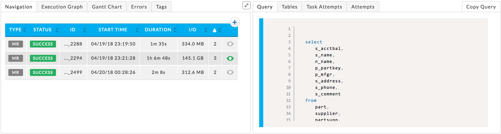 Common Tabs:
Errors: The Hive, MapReduce and Workflow APMs contain this tab. It lists all errors associated with the job. Like job status, the errors are color coded and number for each type (fatal, errors, warnings) are noted for each job. The top line list the number of all jobs/task. The errors are grouped by tasks/jobs and then by severity. For each job/task the total and type of errors are noted. Time, keywords (if any) and a brief message is displayed for the error. Keywords extract important details from the errors messages/log data that can help developers/operators quickly root cause issue. "No errors found" is displayed when there are none.
| 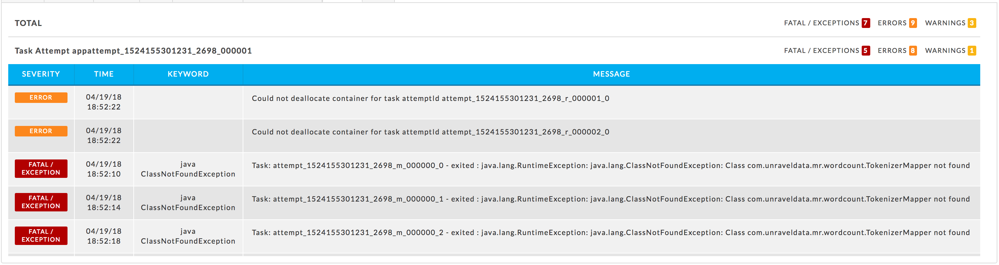 |
Conf/Configuration: The MapReduce, Spark and Tez APMs contain this tab. It lists the configuration parameters for the task/job being displayed and their values. The parameters vary according to task/job.
Tags: All APM's except Pig and Cascading contain this tab. It lists the defined tag keys and associated values for the application. The example below has two tag keys, project and dept with each having one value, group11 and hr respectively.
| 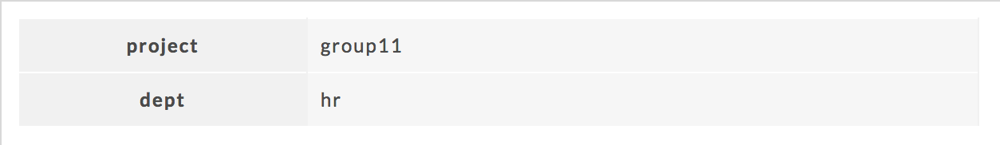 |
Application-Specific Managers
Cascading and Pig Application Managers
The only difference between the two Application Managers is the job type name; otherwise they are exactly the same. The example used below is the Pig APM.
Key Performance Indicators
Events: The number, if any, of Unravel insights for this query. See the Event Panel Examples for more information.
Duration: Total time taken by the query.
Data I/O: Total data read and written by the query.
Number of Yarn Apps: The number of apps that make up the workflow.
By default the window open up displaying the Navigation and Task Attempts.
| 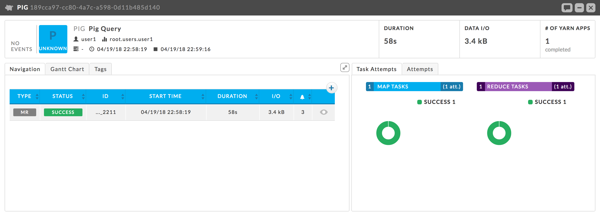 |
Tabs
The left Tabs:
Navigation: list of all the jobs, their status and type.
Gantt chart: Exceptions, errors, and warnings associated with this application. See here for an example.

Click here for a screenshot.
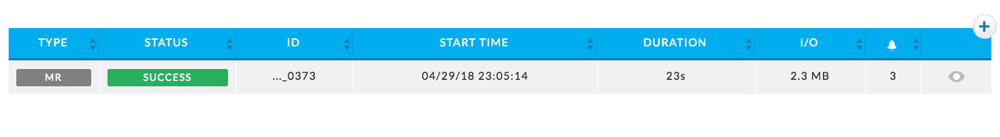 Tags: See here for an example.
The right Tabs
Task Attempts: Displays Map and Reduce task attempts by success, failed, and killed status.The data displayed is for the entire HIVE job. To see the details for a specific MapReduce task click on the job in the Navigation tab. The Pig APM above shows the Task Attempts.
Attempts: Graphs the Map and Reduce task slot usage over the duration of the job.
Click here screenshots of the Attempts graphs.
The wall clock time is noted in the upper left hand corner. The computer slot usage is noted below the graph.
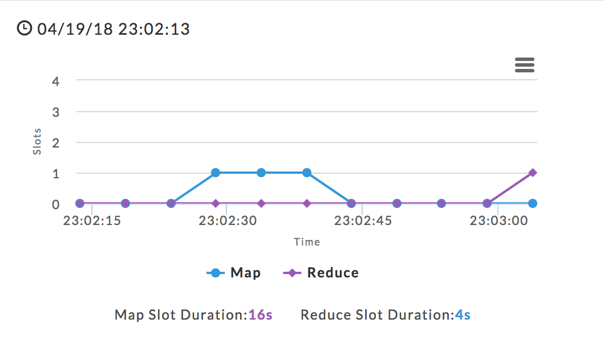
Hive Application Manager
The Hive Application Manager provides a detailed view into the behavior of Hive queries. Typical users are Hadoop DBAs or application owners (engineers, BI team, analysts). You can use this view to:
Resolve inefficiencies, bottlenecks and reasons for failure within applications.
Key Performance Indicators
Events: The number, if any, of Unravel insights for this query. See the Event Panel Examples for more information.
Duration: Total time taken by the application to complete execution.
Data I/O: Total data read and written by the application.
Number of YARN apps: The number of YARN apps making up the query.
| 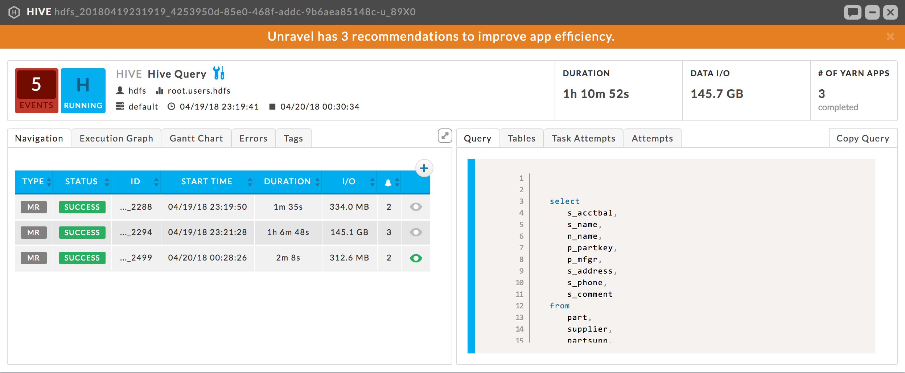 |
Tabs
By default the Hive APM opens displaying the Navigation and Query tabs.
The left Tabs are:
Navigation: List all the MapReduce jobs associate with the query. Click on the job name to bring up job in the MapReduce Application Manager tile.
Execution Graph: Shows detailed information about the MapReduce jobs and their relationship with one another.
This view helps identify bottlenecks and inefficiencies.Click here for more information and to see a screenshot.
The graph provides a quick and intuitive way to understand the MapReduce jobs. Upon opening the tab you immediately see the MR jobs (1) in relation to each other along some job info: tables used, the job length in absolute and relative value to the whole.
Clicking on the job brings up a box with more Table KPI's, forward path(s) for the Map and Reduce operations, and input paths (should you want to show them). Click on a table name to bring up the table information. To close the box click Close (2) or scroll within the tab.
Click on a path point (3) drill deeper. The resulting text box notes the operation type (i.e., MapJoin, ReduceSink, etc.), and various key information about the operation. The information displayed is specific to that operation at that time.
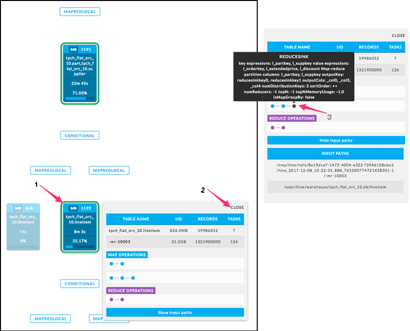 Gantt Chart: Shows job sequencing using a gantt chart.
Errors: Exceptions, errors, and warnings associated with this application. See here for an example.
Tags: Lists defined tag keys and associated values. See here for an example.
The right Tabs are:
Query: Shows the Hive Query. See the Hive Application Manager window above for an example Query tab. Click on the Copy Query to copy it to the clipboard.
Tables: A list tables accessed by Application.
Click here to for more information and to see a screenshot.
Click on the table name to bring up the Table Detail. See here for more information on this view.
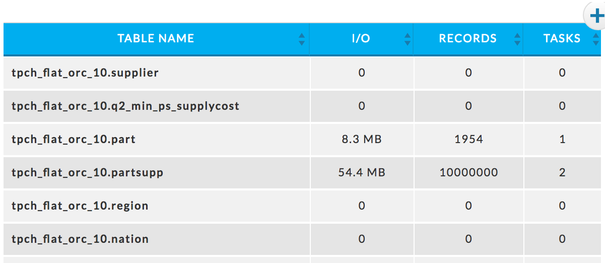 Task Attempts: Displays MapReduce task attempts by success, failed, and killed status.The data displayed is for the entire HIVE job. To see the details for a specific MapReduce task click on the job in the Navigation tab.
Click here to for more information and to see a screenshot.
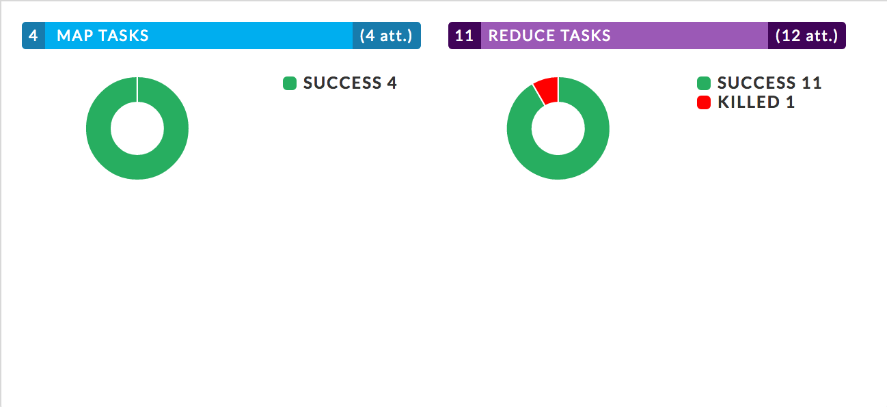 Attempts: Graphs the Map and Reduce task slot usage over the duration of the job.
Click here to for more information and to see a screenshot.
The wall clock time the job started is listed in the upper left hand corner. The total Map and Reduce slot duration time is noted below the graph.
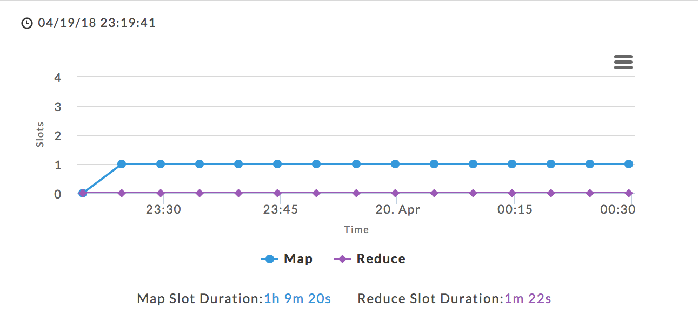
Impala Application Manager
The Impala Application Manager provides a detailed view into the behavior of Impala queries.
Key Performance Indicators
Events: The number, if any, of Unravel insights for this query. See the Event Panel Examples for more information.
Duration: Total time taken by the query.
Data I/O: Total data read and written by the query.
Number of Fragments: Total number of query fragments.
Number of Operators: Total number of operators in this query.
| 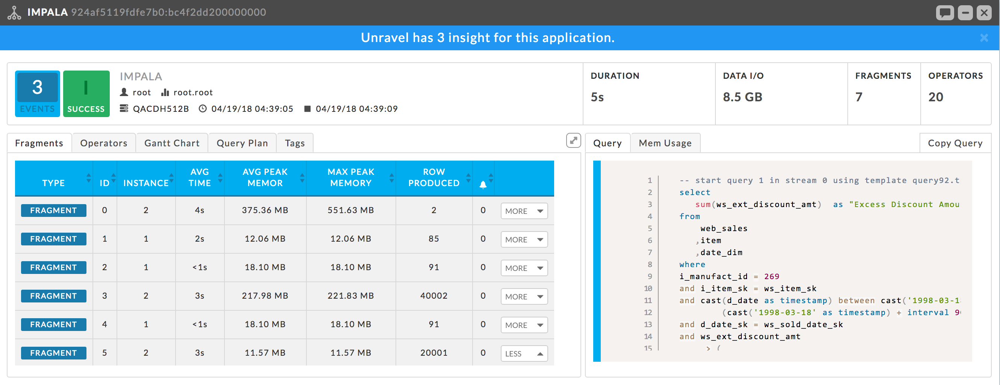 |
Tabs
The left Tabs are:
Fragments: Displays a table with information about each fragment associated with this query. Click on More to expose the Fragments operators and L ess to hide them. The coordinator fragment () is always the nth fragment.
| 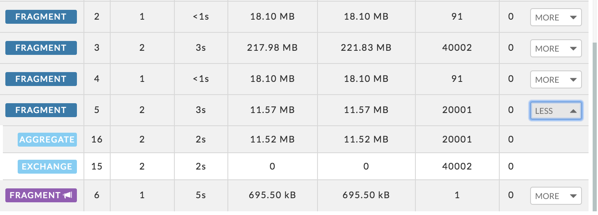 |
Click here for a more information on the Fragment tile and screenshots.
This window shows the Fragment and it's KPIs. It defaults to the table of the Fragment's Operators with the associated KPIs for the operations. Clicking on the operator brings up the operator window. (See Operators
below for more information.) You can view the Query Plan or the Instance View.
| 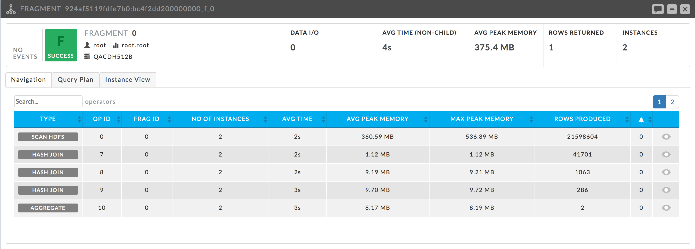 |
Instance View: lists each instances with it's KPI's.
| 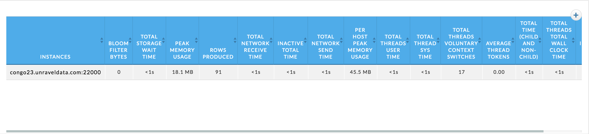 |
Operators: Displays a list of all operators for all fragments.
Click here to screenshots.
You can search the operators name. Click on the operator to display its details.
Scan HDFS details
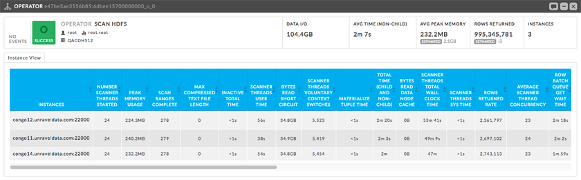 Aggregate Details

Exchange Details
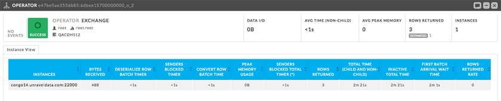 Gannt Chart: Charts the fragments and the time spent on each operation.
Click to see a screenshot.
Hover over a section see the operation and it's KPI's.
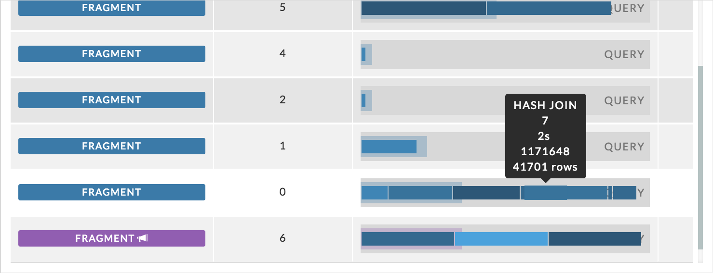 Query Plan: Shows the query plan in fragment or operator view.
Click here to see screenshots.
Both the fragment and operator view are shown below. Hover over the operator to get detailed information. Click on the button to switch views.
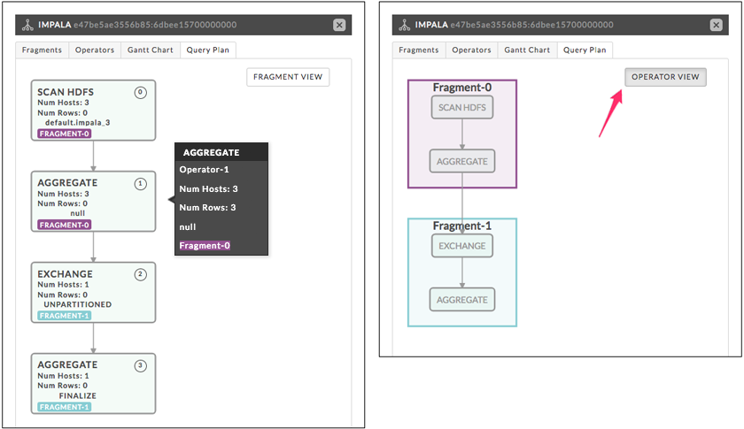 Tags: Lists defined tag keys and associated values. See here for an example.
The right Tabs are:
Query: Shows the query plan code. Click on Query Copy to copy the query. See Impala APM window above for the Query Tab.
Mem Usage: Graphs the Memory Usage by peak usage. Notes the maximum memory used on what host and the estimated memory per host.
Click here to see a screenshot.
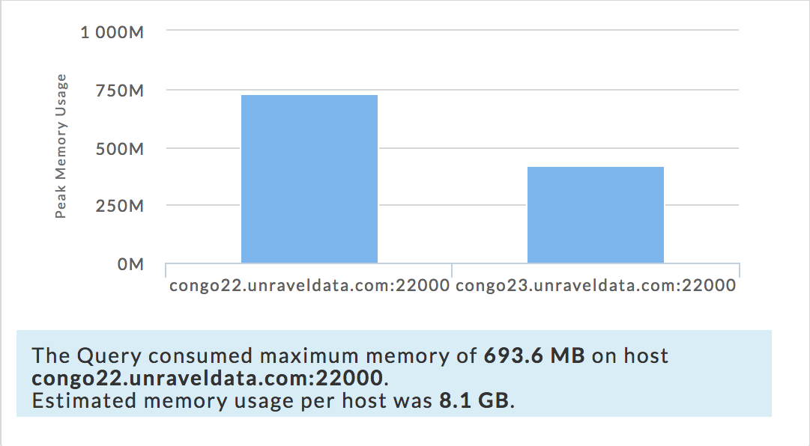
Kafka Application Manager
The Kafka Application Manager provides Multi-Cluster support for monitoring:
Multi Cluster Metrics Monitoring, and
Multi Cluster Consumer Offset/Lag Monitoring.
See Kafka Insights for a Use Case example of locating of lagging or stalled Consumer Groups
Operations | Charts | Kafka displays the list of Configured Kafka Clusters.
Key Performance Indicators
Bytes in/sec
Bytes out/sec
Messages in/sec
Total Fetch Requests per /sec
Number of Active Controller
Number of Under Replicated Partitions Number of Offline Partitions
Click on the Cluster Name to bring up the Cluster View.
| 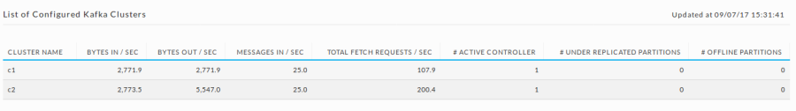 |
Cluster View
This view has three sections:
Key Performance Indicators
 |
Metric Graphs
kafka.server:type=ReplicaManager,name=UnderReplicatedPartitions
kafka.controller:type=KafkaController,name=ActiveControllerCount
kafka.server:type=KafkaRequestHandlerPool,name=RequestHandlerAvgIdlePercent
kafka.server:type=BrokerTopicMetrics,name=BytesInPerSec
kafka.server:type=BrokerTopicMetrics,name=BytesOutPerSec
kafka.server:type=BrokerTopicMetrics,name=MessagesInPerSec
kafka.server:type=ReplicaManager,name=PartitionCount
kafka.server:type=ReplicaManager,name=LeaderCount
kafka.controller:type=KafkaController,name=OfflinePartitionsCount
kafka.network:type=RequestMetrics,name=TotalTimeMs,request=Fetch
kafka.network:type=RequestMetrics,name=TotalTimeMs,request=Produce
kafka.network:type=RequestMetrics,name=RequestsPerSec,request=Fetch
kafka.network:type=RequestMetrics,name=RequestsPerSec,request=Produce
kafka.log:type=LogFlushStats,name=LogFlushRateAndTimeMs
kafka.server:type=DelayedOperationPurgatory,name=PurgatorySize,delayedOperation=Produce
kafka.server:type=DelayedOperationPurgatory,name=PurgatorySize,delayedOperation=Fe
| 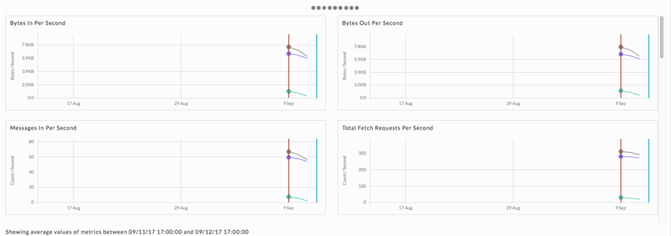 |
Kafka Topics List consumed by a Consumer Group (CG) with relevant KPIs.
Organized by Topic, you can search on the topic name; any topic matching or containing the search sting will be displayed. Click on the Topic or Brokers name to see the Kafka Topic view. In the list below test2 has two (2) consumer groups associated with it, demo and test-consumer-group.Click on the Consumer Group name to bring it up in the Consumer Group View.
 |
Consumer Group View
Key Performance Indicators
Number of Topics
Number of Partitions
The Topic lists displays the KPIs; when details are available a more info glyph is displayed. Click on it to bring up the Kafka view for the topic. Below the list are two tabs which display graphs of the Topic and Partition details. By default the window opens with the Topic Detail graph displayed.
 |
Click here to see a screenshot of the Partition Tab.
You can chose both the Partition and the Metric for the display. By default the 0th partition is displayed using the metric offset. A Partition Details' list is populated if the details are available.
| 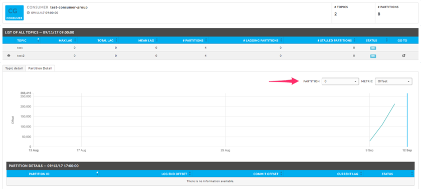 |
Click here to see a screenshot Kafka Topic view.
The Kafka View has two tabs, Topic Detail and Partition Detail. Each view has a Consumer Details' list which is populated if the details are available.
Kafka Topic Detail
By default the Kafka Topic Detail opens in the Topic Detail view which graphs the KPIs.
 |
Kafka Partition Detail
You can chose both the Partition and the Metric for the display. By default the 0th partition will be displayed on using the metric offset.
| 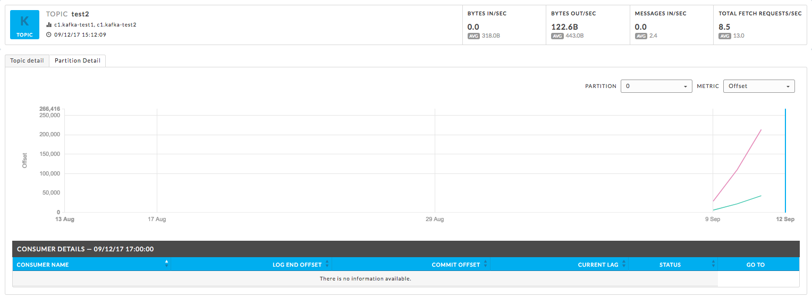 |
Unravel Insights for Kafka
Auto-detection of Lagging/Stalled Consumer Groups
Unravel determines Consumer status by evaluating the consumer's behavior over a sliding window. For example, we use average lag trend for 10 intervals (of 5 minutes duration each), covering a 50 minute period. Consumer Status is evaluated on several factors during the window for each partition it is consuming.
For a topic partition Consumer status is
Stalled if:
Consumer commit offset for the topic partition is not increasing and lag is greater than zero.
Lagging if:
Consumer lag for the topic partition is increasing consistently, and,
An increase in lag from the start of the window to the last value is greater than lag threshold (e.g., 250).
The information is distilled down into a status for each partition, and then into a single status for the consumer. A consumer is either in one of the following states:
OK,
Warning: the consumer is working, but falling behind, or
Error: the consumer has stopped or stalled.
MapReduce Application Manager
The MapReduce Application Manager provides and easy way to understand the breakdown of the application. You can use this view to:
Drill down into MapReduce jobs that make up the application, and
Resolve inefficiencies, bottlenecks and reasons for failure within applications.
It contains similar sections to the Hive Application Manager and additionally shows the timeline view of MapReduce job execution, logs and configuration.
Key Performance Indicators
Events: The number, if any, of Unravel insights for this query. See the Event Panel Examples for more information.
Duration: Total time taken by the application to complete execution.
Data I/O: Total data read and written by the application.
| 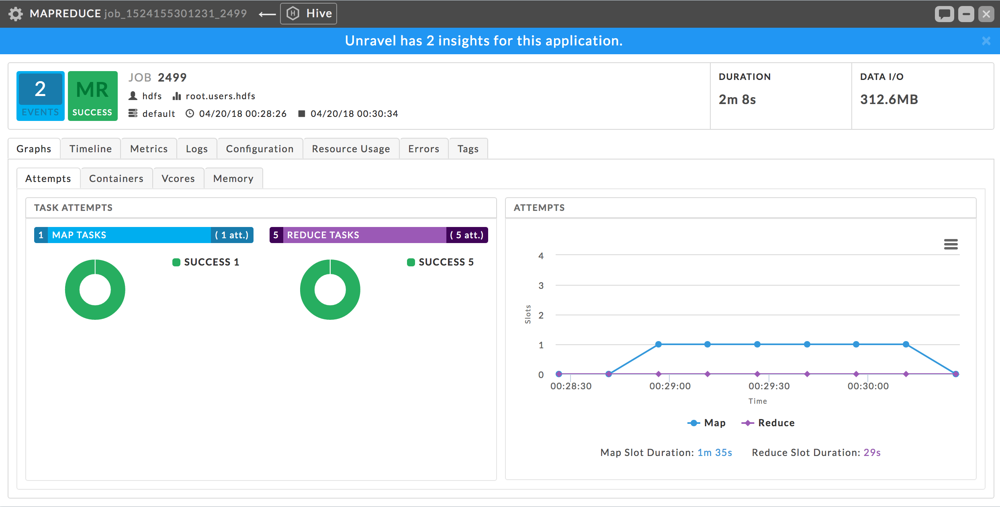 |
Tabs
By default the MapReduce APM opens in the Graphs | Attempts view.
Graphs: Has four (4) sub tabs.
Attempts: Number of task attempts are charted in "wall-clock" time. The aggregated time of all tasks running in on the Map/Reduce slot duration is noted below the graph.
Containers, Vcores, andMemory: Graphs utilization of slot containers, vcores, and memory over time.
Timeline: Displays the details of each MapReduce job by showing the execution of each task on the machine it was executed on.
Click here for more details and to see a screenshot.
The Timeline tab is divided into two sections:
a Distribution chart (which displays either the Map or Reduce tasks)
a bottom table which lists either the tasks by stages on servers or teh list of tasks and their associated KPIs'
The default displays the Map jobs and the timeline. You can change the Distribution Charts by selecting Map or Reduce (1). Whether to display the Timeline or Selected tasks (3). When displaying the timeline you can filter the display by Map, Reduce, Killed/Failed or All jobs (2). You can chose what timeline/tasks to display by dragging and highlighting a section of the distribution chart.
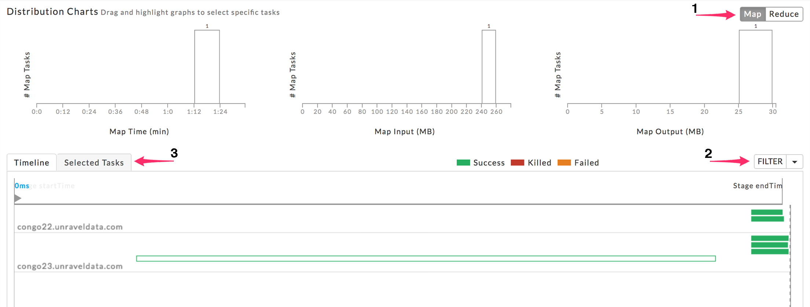 Metrics: The metrics, their definitions and values.
Click here to see the screenshot.
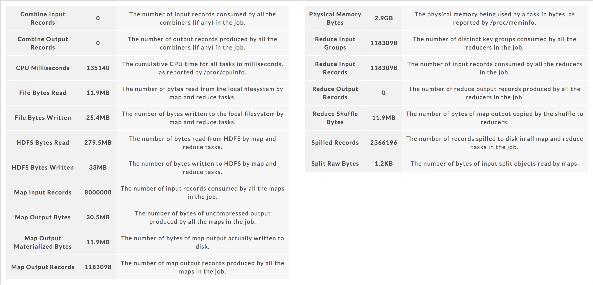 Logs: Lists the available logs by Map, Reduce and Application Master.
Click here for more details and to see a screenshot.
Click on the tab to see the listing for that type (Map, Reduce, or Application Master). Click on an item to see the log.
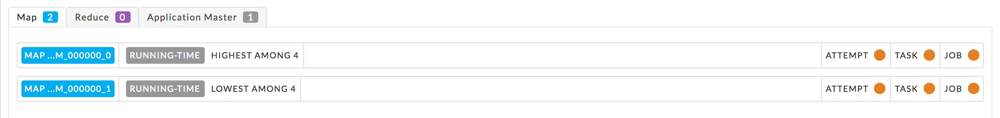 Click here for an example log.
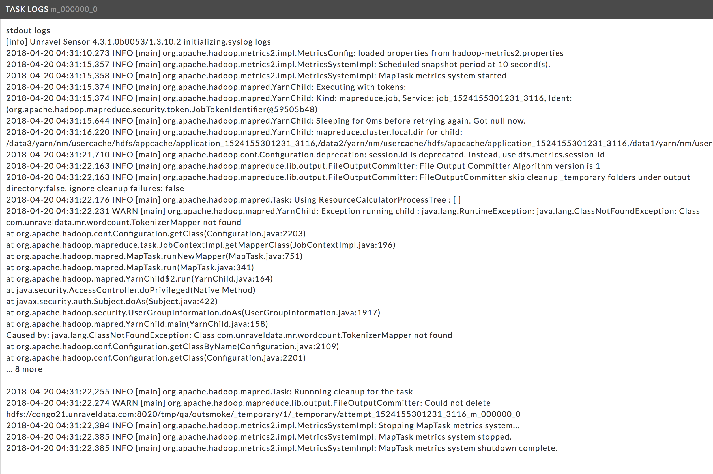 Configuration: The defined parameters and their values.
Click here to see a screenshot
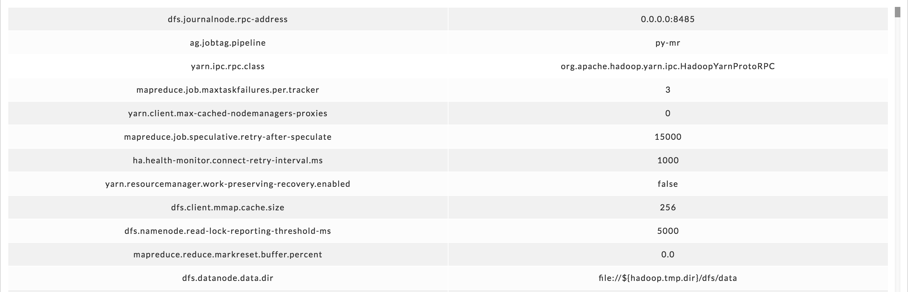 Resource Usage:
These graphs are useful for identifying critical resources that caused a performance degradation.Click here to see a screenshot
Initially all the executors are displayed using the Metric systemCpuLoad. You can chose a different metric to display from the Metric pull down men. Hover over an executor to bring up the Only option and click on it to display just the information for that executor. To graph all executors, hover above the list for the Show All option and click on it to display all.
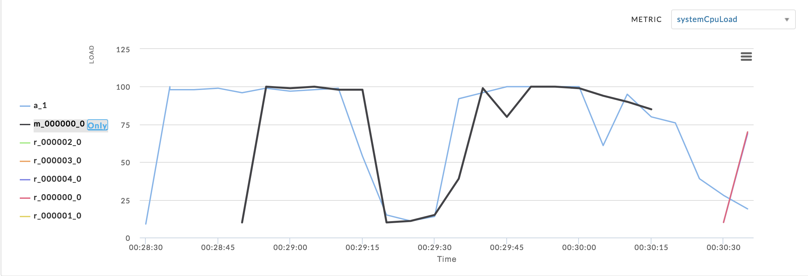 Errors: Exceptions, errors, and warnings associated with this application. See here for an example.
Tags: Lists defined tag keys and associated values. See here for an example.
Spark Application Manager
See Spark Application Manager page.
Tez Application Manager
The Tez Application Manager provides a detailed view into the behavior of Hive queries as a DAG (Directed Acyclic Graph).
To troubleshoot Tez data collection issues, check /usr/local/unravel/logs/unravel_ew_1.log.
Key Performance Indicators
Events: The number, if any, of Unravel insights for this query. See the Event Panel Examples for more information.
Duration: Total time taken by the query.
Data I/O: Total data read and written by the query.
| 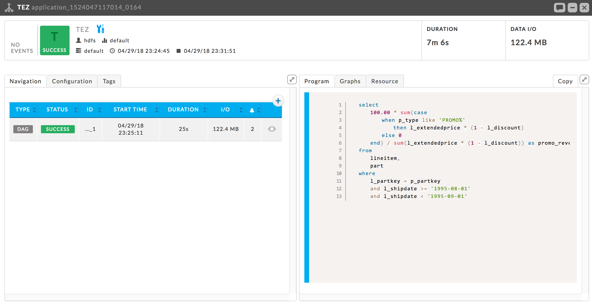 |
Tabs
By default the Tez APM opens showing the Navigation and Program Tabs.
The left Tabs are:
Navigation: List the Dag jobs with KPIs, Duration and I/O.
Click here for more information and screenshots of the Dag detail.
The DAG detail has six tabs:
Query: Displays the query.
Graph: Displays the vertices and their relationship to each other. Clicking on a node brings up the task details.

Counter: Lists all the relevant counters for the Tez-DAG and their values.
Vertex Timeline: Displays the timeline for all tasks. The task time can be displayed in both Wall Clock time and Total Run time as applicable. Hover over the task to display the information in text.
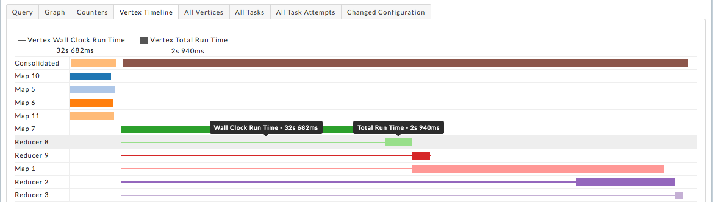 All Vertices: List each vertex and their KPIs. The Vertices are searchable by Vertex Name; vertices containing the string will be displayed.

All Task: List all tasks, their status (failed, success, etc.), vertex name and other relevant information. The tasks are searchable by Task Id and Vertex name; Tasks containing the string will be displayed.
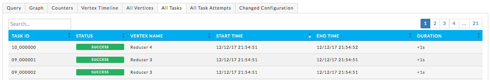 All Task Attempts: List all attempts, their status (failed, success, etc.), vertex name and other relevant information. The task attempts are searchable by Attempt Id, Task Id and Vertex name; Task attempts containing the string will be displayed.

Changed Configuration: Lists all relevant parameters and their value.
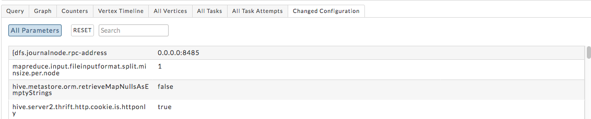
Configuration: List the configuration parameters and their values.
Tags: Lists defined tag keys and associated values. See here for an example
The right Tabs are:
Program: Displays the query.
Graphs: Has three (3) sub tabs.
Containers, Vcores, andMemory: Graphs utilization of slot containers, Vcores, and memory over time.
Resources: Graphs the resources consumed.
Click here for more information and to see a screenshot.
By default the Resource tab display the first ten (10) series using the systemCpuLoad metric. You can select one or more series to display in the Select Box. You can change the default number of series to show (1-n). Clicking on a series name causes the graph to display that series alone. You chose the Metric to graph from the pull down menu. Click Get Data to retrieve the data for that metric, it can be viewed in its Raw form, JSON, or headers.

Workflow Manager
The Workflow Manager provides a comprehensive view to understand workflows and their patterns of execution. It is used by Workflow (Pipelines) owners
to identify anomalies, inefficiencies and bottlenecks in workflow instances.
The Workflow Manager helps pipeline owners easily maintain SLAs. (Applications that have a Workflow parent will have a link to the workflow in the Goto column in Applications | Applications.)
Key Performance Indicators
Events: The number, if any, of Unravel insights for this query. See the Event Panel Examples for more information.
Duration: Total time taken by the query
Data I/O: Total data read and written by the query.
Number of Yarn Apps: The number of apps that make up the workflow
| 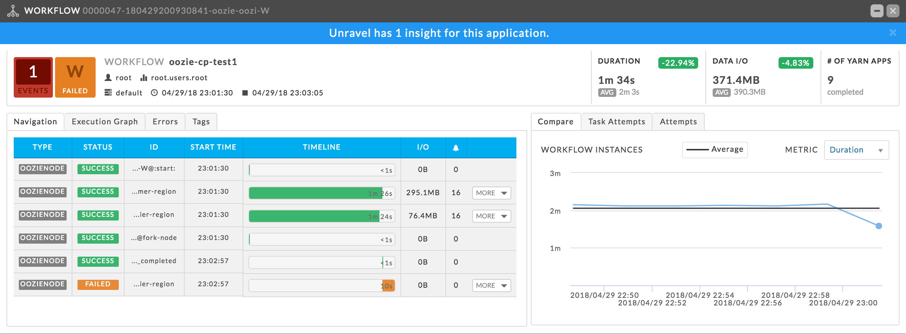 |
Tabs
The APM opens showing the Navigation and Compare tabs by default.
The left Tabs
Navigation: Provides an easy way to understand the breakdown of the workflow the applications which comprise the Workflow, i.e., Hive, Spark, MapReduce, Oozie. Click on More to display the jobs/apps which comprise the type.
Click here for more information and a screenshot
Below the second Oozienode is shown, it is comprised of one MapReduce job and three Hive jobs. The hive jobs comprise one or more tasks, so that too can be expanded. In the example below, the second Oozienode has been expanded along with the first hive job within it. You can click on any job to see the application manager for it. In the example, below you can click on the expanded hive job to bring up the hive application manager. Similarly you can click on the mapreduce job within the hive job to go directly to it. Click on Less to close the list.
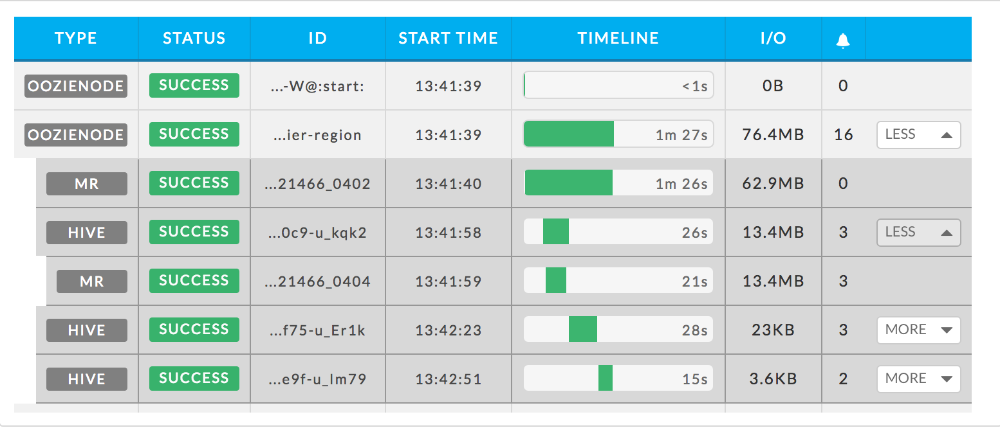 Execution: Displays the execution graph of the workflow.
Click here for more information and a screenshot Click
to zoom in, and

to zoom in. Click
to return to the initial display. Hover over a node within the graph to see a text box which information about the node task.
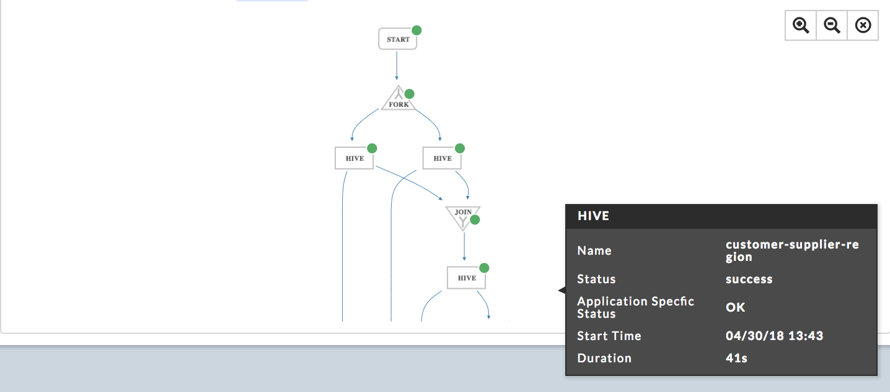 Errors: Exceptions, errors, and warnings associated with this application. See here for an example.
Tags: See here for an example.
The right Tabs:
Compare: Provides a quick way to understand how well a workflow run compares to its other runs. Hovering your pointer graph displays instances top KPIs such as duration, data I/O, resources, and the number of jobs in that instance. Clicking on the point in the chart brings up the Workflow APM for that instance. The graph Metrics choices are I/O, MR Jobs, Resource and Events. The Workflow APM above show an example of the compare tab.
Task Attempts: Displays charts for Map Task, Reduce, and Spark Tasks, broken down by success, failed, and killed as appropriate.
Click to see a screenshot.
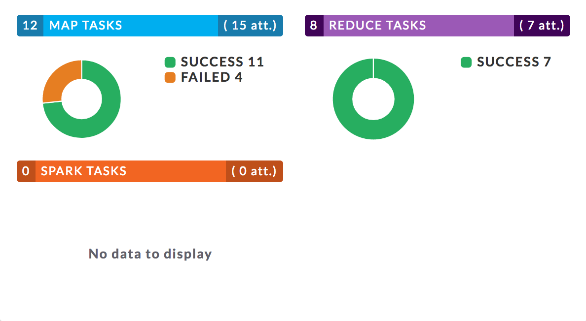 Attempts: Graphs the attempts over the time interval in Wall Clock time and list the Map and Reduce Slot Duration in total computing time below.
Click to see a screenshot.
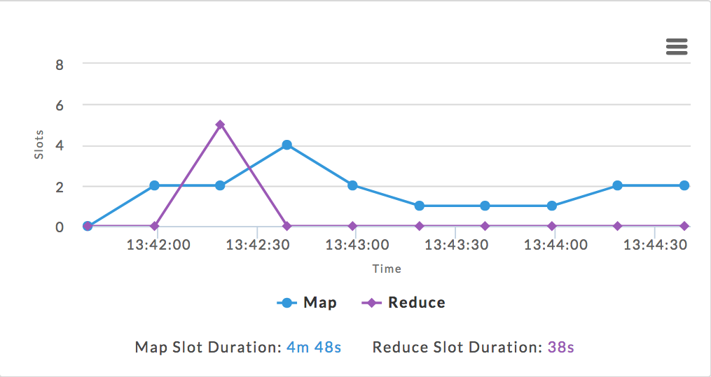
Event Panel Examples
The Unravel intelligence engine helps you manage your applications more efficiently by providing insights into their run. The UI engine gives its insights and tuning suggesting via the Events Panel. Not all UI engine insights results in concrete recommendations, so to take full advantage you must read the efficiency panel. There is not a 1-1 correspondence between the event and recommendation number. A single event might lead to no or many recommendations.
Recommendations
Lists the parameters to change, shows their current and recommended value.
Efficiency
The efficiency list details the inefficiencies. The UI engine then
might make a recommendation and may note the expected result from such a change,
make a suggestion, or
note where to look to increase efficiency
Below are two examples. Each type of job and instance of a job has events relevant to that particular job and instance.
MapReduce Job Example
This MapReduce job is part of a Hive Query. In this example the UI engine lists list four (4) events and has three (3) recommendations.
Recommendations
 |
Efficiency 1: Used Too Many Reducers
Resulted in the one recommendation (#1).
 |
Efficiency 2: Reduce Tasks that Start before Map Phase Finishes
Resulted in one suggestion.
Efficiency 3: Too Many Mappers
Resulted in the two recommendations (#2 and #3).
Efficiency 4: Large Data Shuffle from Map to Reduce
Resulted in a suggestion.
Tez DAG Example
This Tez DAG job is part of a Hive Query. In this example the UI engine lists list three (3) events and has four (4) recommendations.
Recommendations
Efficiency 1: Tez DAG Map Vertex used too many tasks
Resulted in two suggestions (#3 and #4) and explanation of the problem.
Efficiency 2: Tez DAG Reducer Vertex used too many tasks
Resulted in one recommendation (#1).
 |
Efficiency 3: hive.exec.parallel is set to false
Resulted in one recommendation (#2).
 |
Appendices
Event List
A list of all events generated by Unravel.
Resource Metrics
A list of resource metrics collected by Unravel.